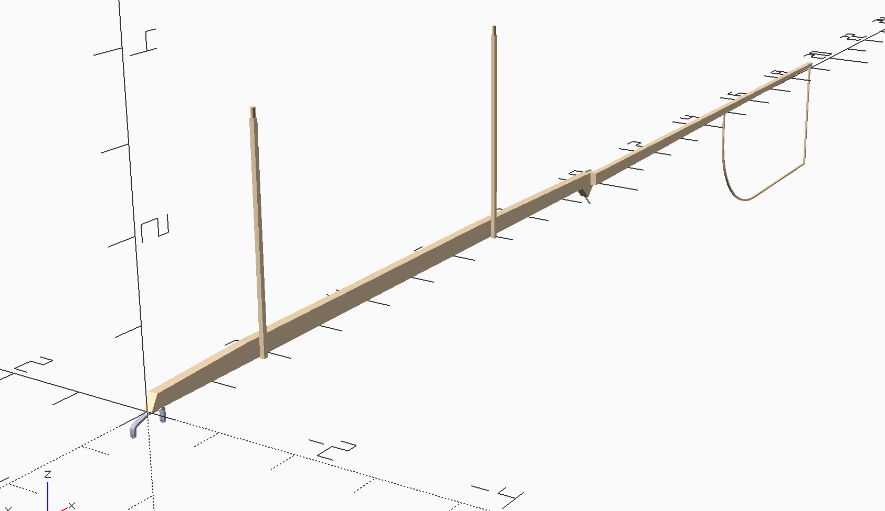

Read time: 0.3 minutes (35 words)
MMlpp Fuselage¶
The model fuselage has a lot of parts to assemble. These are detailed below.
The positioning data needed to assembly this component are shown next.
1//###########################################
2// fuselage-data.scad
3// (c) 2021 - Roie R. Black
4//*******************************************
5include <../constraints.scad>
6include <../materials.scad>
7include <thrust_bearing/thrust_bearing_data.scad>
8include <motor_stick/motor_stick_data.scad>
9include <../prop/prop_data.scad>
10
11// prop adjustment
12prop_x_offset = 1/16;
13
14// wing position dimensions
15wing_offset = 1.625;
16wing_elevation = 3;
17
18// tail boom data
19tb_color = WOOD_Balsa;
20
21tb_front_height = 3/16;
22tb_rear_height = 1/16;
23tb_thickness = 3/32;
24
25tail_boom_overlap = 1/8;
26tail_boom_length = max_overall_length -ms_length + prop_forward_x + tail_boom_overlap;
27tail_boom_rear_x = max_overall_length + prop_x_offset;
28
29
30//adjust motor stick to fit bearing
31fuse_offset = thb_length - thb_top_length - 3 * tube_thickness;
32
33// front post position
34fp_offset = wing_offset - post_diameter/2 - tube_thickness;
35
36// rear post position
37rp_offset = wing_offset + max_wing_chord + post_diameter/2 + tube_thickness;
38
39
40//-------------------------------------
41// calculated values
42
43tail_boom_angle = atan2(tb_front_height - tb_rear_height,tail_boom_length);
44
45// stab positioning data
46srp_offset = tail_boom_rear_x - post_diameter - tube_thickness-1/16;
47sfp_offset = srp_offset - max_stab_chord - post_diameter - tube_thickness-1/64;
Here is the assembly code:
1//##########################################
2// fuselage.scad
3// (c) 2021 - Roie R. Black
4//******************************************
5include <./fuselage_pos.scad>
6
7use <./motor_stick/motor_stick.scad>
8use <./tail_boom/tail_boom.scad>
9use <./rear_hook/rear_hook.scad>
10use <./thrust_bearing/thrust_bearing.scad>
11use <./wing_post/wing_post.scad>
12use <./stab_post/stab_post.scad>
13use <./fin/fin.scad>
14
15use <MMlib/position.scad>
16
17module fuselage() {
18 align(ms_pos) motor_stick();
19 align(tb_pos) tail_boom();
20 align(rh_pos) rear_hook();
21 align(thb_pos) thrust_bearing();
22 align(fin_pos) fin();
23 align(fwp_pos) wing_post();
24 align(rwp_pos) wing_post();
25 align(fsp_pos) stab_post();
26 align(rsp_pos) stab_post();
27}
28
29//----------------------------------------------
30// debug display
31fuselage();
The assembly is shown below:
